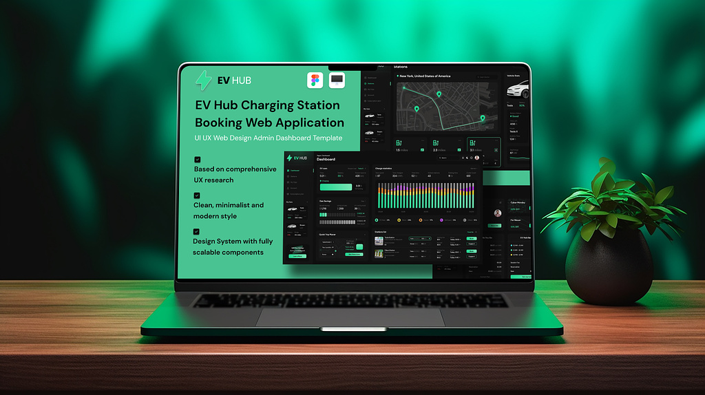
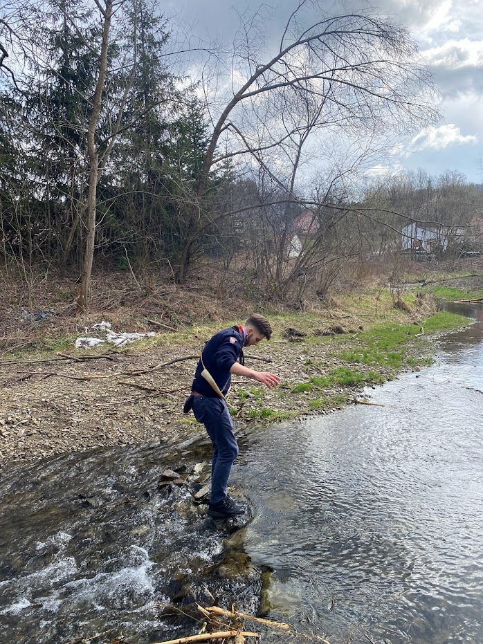

My name is Filip Cetnarowicz.
I study at Krakow University of Economics in the Applied Informatics field of study. This choice of mine well presents my deep interests. I really enjoy finding solutions for real problems with new technologies, using my brain power and creativity. Moreover, it's been about 5 years since I quit my playing video games addiction because I decided to put all my time and effort into some real-life things - and here is Informatics applied in Economics. I can dive into those topics for literally hours straight because I find it to be a really good game - to find out ways how the economy works, how can I use it, what ideas do market needs, how can I fit myself best into this whole money machine to take as much money, satisfaction and valuable skills from there. Although I just started studying there, I see that there is a very good environment to gain such an opportunity in my future career - my expectations are met here for this moment. I don't have many accomplishments so far, but I'm sure they will come soon assuming that I will stay on the proper route. My first goal that I'm aiming for is getting my first job in IT. As a long-term target, I would like to develop my own little IT product (or products) and be my own boss.



Here is my hobby.
At this moment I work as a swimming instructor (this is closely coupled with my water-related sports hobbies). But my even greater hobby is Scouting - which I wrote the previous task about. I mean Scouting is more like a lifestyle than a hobby for me. I think everyone should have a community, where people inspire, where you can take a step back and think whether you follow the path that God invented for you, where you can develop different skills than those you develop most of the week for many hours a day.



Here is my inspiration.
Several weeks ago I did the CliftonStrenghts
(GALLUP)
talents' test and that's what extremely inspired me in this project. As an entrepreneur in the future, I would like to make the maximum possible use of the unique character traits blending of each of my employees. To do this it is very important to know about the broad picture of a person that I have in my team. Fortunately, today's employment portals are huge mine of a variety of people's images, so having a good amount of time I could put together a team that is ideal for my project's purpose.

Here is my data.
This data is a list of different people looking for a job at the moment. There are sophisticated data, that can help find people for small product groups. Most importantly, they show me their dominating character traits, which are the main criteria for my choice while completing the team. There are 5 of them in a particular order, based on their official test results. Moreover, they share their more detailed, more private data which can be helpful for me to know them better and understand their whole personality and their needs. Of course, I also can see all the contact information there in case I would like to invite them for a job interview. I can also check their past earnings to make sure I can afford my dream team.
Here are my first 10 columns.
XML
XML format (Extensible Markup Language) is a universal markup language used to represent structured data in a textual form. Its main feature is a highly extensible structure, allowing for the definition of custom tags. Popular in various fields, from web applications to databases, XML is frequently used for data exchange between different systems. Due to its readability for both humans and machines, XML is also utilized for storing application configurations and document structures.
CSV
CSV format (Comma-Separated Values) is a simple and widely used method for storing data in a textual form. In a CSV file, values are separated by commas, allowing for a clear and unambiguous representation of tabular data. Each row represents a single record, with columns separated by commas. This format is easy to write and read, making it widely utilized in various fields such as data analysis, data export and import between different applications, as well as in databases. Additionally, CSV files are platform-neutral and can be edited using simple text editors. Due to its simplicity and versatility, the CSV format is popular in both business and programming environments, facilitating easy exchange and storage of data.
JSON
JSON format (JavaScript Object Notation) is a lightweight and human-readable data interchange format. Its structure is based on key-value pairs, making it easy to understand and process for both humans and machines. Widely used in web applications, JSON is extensively employed for transmitting data between server and client. Its simplicity and conciseness make it an excellent choice for storing structured information, as well as for configuration and data exchange between different systems.